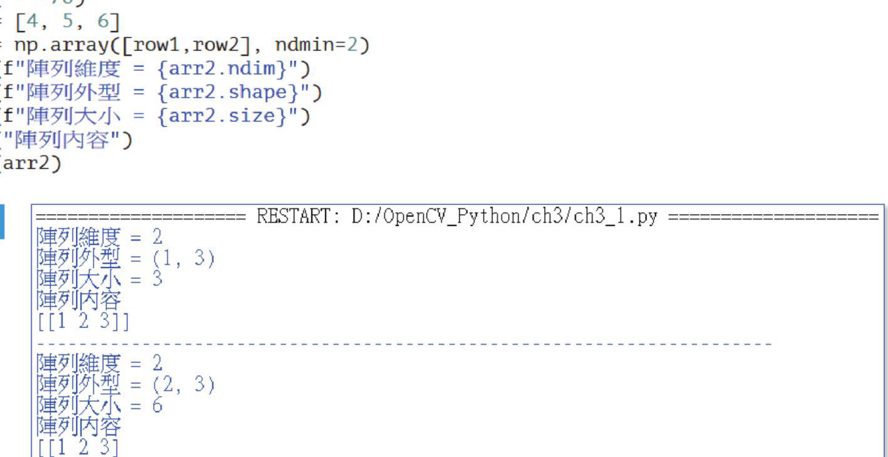
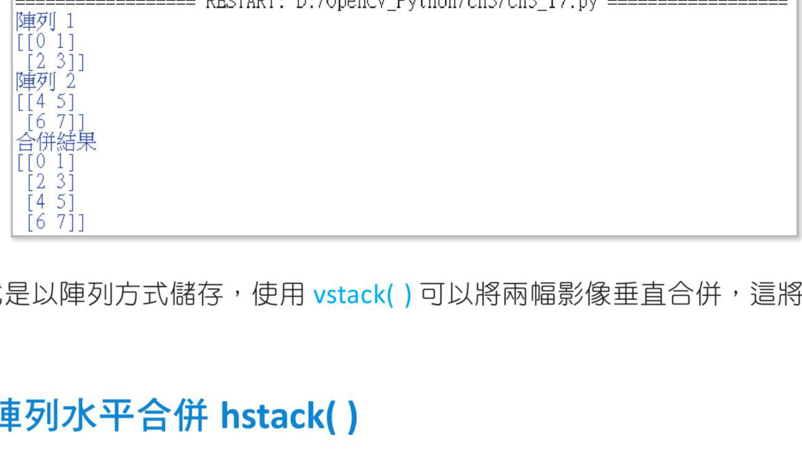
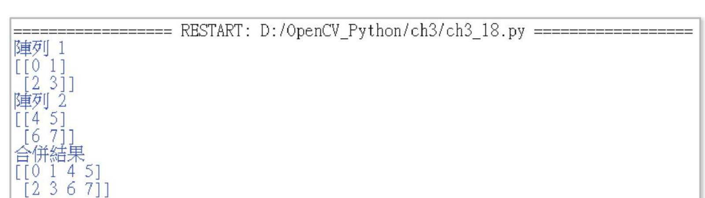

第 3 章
学习 OpenCV 需要的 Numpy 知识
本章共 6 节 · ndarray、dtype、数组创建、切片、复制、axis、vstack/hstack
OpenCV 的图像在 Python 中通常以 NumPy 的 ndarray 保存。要正确理解图像尺寸、通道、像素索引和图像拼接，
需要先掌握数组的数据类型、形状、索引、切片与合并。本页按原书第 3 章结构整理，保留示例编号、函数语法、参数含义、输出形态与练习方向。
3-1
数组 ndarray
Python 的列表和元组也能存放一组数据，但在大量数值计算、图像处理、科学运算和 AI 任务中，普通列表的速度和资源效率都不够理想。
NumPy 是 Numerical Python 的缩写，核心目标就是让 Python 能高效率处理数组数据。
NumPy 的主要数组对象是 ndarray。OpenCV 读取到的灰度图、彩色图和带透明通道的图像，底层都可以看作二维或三维的
ndarray。因此后续读取图像、访问像素、分割通道、合并图像时，都会反复使用本章这些数组操作。
| ndarray 特性 | 说明 |
|---|
| 固定大小 | 数组创建后形状是明确的。需要改变排列方式时，一般使用 reshape() 重新解释形状。 |
| 元素类型一致 | 同一个数组内的元素通常使用同一种数据类型，例如 uint8、int32、float64。 |
| 适合矩阵运算 | 数组可以直接与数字、数组进行批量运算，不需要手动逐项循环。 |
关联
OpenCV 图像的 shape、size、dtype 都来自 NumPy 数组属性。图像处理前先确认这些属性，可以避免通道顺序和索引方向错误。
3-2
Numpy 的数据类型
NumPy 对数据类型有明确区分。图像处理中最常见的是 uint8，因为 8 位无符号整数刚好能表示 0 到 255 的像素强度。
进行数学运算或归一化时，也经常会遇到 float32、float64。
| 类型 | 含义 | 常见用途 |
|---|
bool | 布尔类型，值为 True 或 False | 遮罩、条件判断结果 |
int、intc、intp | 整数类型，宽度依平台或 C 语言类型而定 | 索引、计数、一般整数运算 |
int8、int16、int32、int64 | 有符号整数，数字表示位数 | 需要正负范围的整数数据 |
uint8、uint16、uint32、uint64 | 无符号整数，最小值为 0 | 图像像素、二值图、灰度图、彩色图 |
float、float16、float32、float64 | 浮点数 | 归一化、滤波、机器学习输入 |
complex、complex64、complex128 | 复数类型 | 频域运算等特殊场景 |
常用的 ndarray 属性如下：
| 属性 | 说明 | 示例含义 |
|---|
dtype | 数组元素的数据类型 | uint8、int32、float64 |
itemsize | 每个元素占用的字节数 | int32 通常为 4 字节，int8 为 1 字节 |
ndim | 数组维度数量 | 一维数组为 1，二维矩阵为 2，彩色图常见为 3 |
shape | 数组在每个维度上的长度 | (3,)、(2, 3)、(height, width, channels) |
size | 数组元素总数 | 等于 shape 中各维度长度相乘 |
3-3
创建一维或多维数组
3-3-1 使用 array() 创建数组
numpy.array() 可以把列表、元组等对象转换成 NumPy 数组。原书给出的语法重点如下：
numpy.array(object, dtype=None, copy=True, order='K', subok=False, ndmin=0)
| 参数 | 说明 |
|---|
object | 要转换成数组的对象，例如列表、元组或嵌套列表。 |
dtype | 指定数组元素类型；省略时由 NumPy 自动推断。 |
copy | 是否复制原始对象。默认 True。 |
order | 指定内存排列方式，常见值有 K、A、C、F。 |
subok | 是否允许返回子类数组。默认 False。 |
ndmin | 指定返回数组至少具有的维度数。 |
创建一维数组，并查看类型
import numpy as np
x = np.array([1, 2, 3])
print(type(x))
print(x)
<class 'numpy.ndarray'>
[1 2 3]
3-3-2 存取一维数组元素
一维数组的元素可以用索引读取或修改。索引从 0 开始，因此 x[0] 是第一个元素，x[1] 是第二个元素。
import numpy as np
x = np.array([1, 2, 3])
print(x[0])
print(x[1])
print(x[2])
x[1] = 10
print(x)
查看数组属性
import numpy as np
x = np.array([1, 2, 3])
print("dtype =", x.dtype)
print("itemsize =", x.itemsize)
print("ndim =", x.ndim)
print("shape =", x.shape)
print("size =", x.size)
dtype = int32
itemsize = 4
ndim = 1
shape = (3,)
size = 3
如果创建数组时指定 dtype=np.int8，每个元素只占 1 字节，itemsize 会变成 1。
如果使用小数创建数组，默认通常会推断为 float64。
3-3-3 使用 ndmin 创建二维数组
ndmin 可以要求 array() 返回至少几维的数组。下面示例先把一维列表强制转换成二维，再把两列数据组成 2×3 数组。
程序实例 ch3_1.py：创建二维数组
# ch3_1.py
import numpy as np
row1 = [1, 2, 3]
arr1 = np.array(row1, ndmin=2)
print("数组 1 维度 =", arr1.ndim)
print("数组 1 形状 =", arr1.shape)
print("数组 1 元素总数 =", arr1.size)
print(arr1)
row2 = [4, 5, 6]
arr2 = np.array([row1, row2], ndmin=2)
print("数组 2 维度 =", arr2.ndim)
print("数组 2 形状 =", arr2.shape)
print("数组 2 元素总数 =", arr2.size)
print(arr2)
数组 1 维度 = 2
数组 1 形状 = (1, 3)
数组 1 元素总数 = 3
[[1 2 3]]
数组 2 维度 = 2
数组 2 形状 = (2, 3)
数组 2 元素总数 = 6
[[1 2 3]
[4 5 6]]

原书第 3-6 页：ndmin=2 创建二维数组的输出。
程序实例 ch3_2.py：直接使用嵌套列表创建二维数组
# ch3_2.py
import numpy as np
x = np.array([[1, 2, 3], [4, 5, 6]])
print("维度 =", x.ndim)
print("形状 =", x.shape)
print("元素总数 =", x.size)
print(x)
维度 = 2
形状 = (2, 3)
元素总数 = 6
[[1 2 3]
[4 5 6]]
程序实例 ch3_3.py：读取二维数组元素
# ch3_3.py
import numpy as np
x = np.array([[1, 2, 3], [4, 5, 6]])
print(x[0][2])
print(x[1][2])
print(x[0, 2])
print(x[1, 2])
写法
x[0][2] 与 x[0, 2] 都能读取第 0 行第 2 列，但 NumPy 中更常用逗号写法 x[0, 2]。
3-3-4 使用 zeros() 创建全 0 数组
np.zeros(shape, dtype=float)
shape 指定数组形状，dtype 指定元素类型。省略 dtype 时，默认会生成浮点数数组。
图像处理中，全 0 的 uint8 数组可表示黑色图像。
程序实例 ch3_4.py：zeros()
# ch3_4.py
import numpy as np
x1 = np.zeros(3)
x2 = np.zeros((2, 3), dtype=np.uint8)
print(x1)
print(x2)
[0. 0. 0.]
[[0 0 0]
[0 0 0]]
3-3-5 使用 ones() 创建全 1 数组
np.ones(shape, dtype=None)
ones() 会创建内容全为 1 的数组。如果要创建白色图像，常见做法是创建全 1 数组后乘以 255，并使用 uint8 类型。
程序实例 ch3_5.py：ones()
# ch3_5.py
import numpy as np
x1 = np.ones(3)
x2 = np.ones((2, 3), dtype=np.uint8)
print(x1)
print(x2)
[1. 1. 1.]
[[1 1 1]
[1 1 1]]
3-3-6 使用 empty() 创建未初始化数组
np.empty(shape, dtype=float)
empty() 只分配数组空间，不负责把内容初始化为 0 或 1，所以数组中看到的值没有固定意义。
它适合马上会被完全覆盖的数据，不适合直接拿初始值做计算。
程序实例 ch3_6.py：empty()
# ch3_6.py
import numpy as np
x1 = np.empty(3)
x2 = np.empty((2, 3), dtype=np.uint8)
print(x1)
print(x2)
输出值不固定。它显示的是当时内存里的残留内容，因此每次运行都可能不同。
3-3-7 使用 random.randint() 创建随机整数数组
np.random.randint(low, high=None, size=None, dtype=int)
| 参数 | 说明 |
|---|
low | 随机整数范围的下限。如果省略 high，范围为 0 到 low，不包含 low。 |
high | 随机整数范围的上限，不包含该值。 |
size | 输出数组形状。省略时返回单个随机整数。 |
dtype | 输出整数的数据类型。 |
程序实例 ch3_7.py：random.randint()
# ch3_7.py
import numpy as np
x1 = np.random.randint(10, 20)
x2 = np.random.randint(1, 5, 10)
x3 = np.random.randint(10, size=(3, 5))
print(x1)
print(x2)
print(x3)
每次执行都会变化。第一行是 10 到 19 的单个整数，第二行是长度为 10 的一维数组，第三行是 3×5 的二维随机数组。
3-3-8 使用 arange() 创建连续数组
np.arange(start, stop, step)
arange() 会产生等差序列。start 是起始值，stop 是结束上限但不包含该值，step 是间隔。
只写一个参数时，该参数会被视为 stop。
程序实例 ch3_7_1.py：arange()
# ch3_7_1.py
import numpy as np
x = np.arange(16)
print(x)
[ 0 1 2 3 4 5 6 7 8 9 10 11 12 13 14 15]
3-3-9 使用 reshape() 改变数组形状
np.reshape(a, newshape)
reshape() 不改变元素值，只改变排列形状。新形状的元素总数必须与原数组相同。
newshape 中可以有一个维度写成 -1，由 NumPy 自动推算该维度大小。
程序实例 ch3_7_2.py：reshape(2, 8)
# ch3_7_2.py
import numpy as np
x = np.arange(16)
y = np.reshape(x, (2, 8))
print(y)
[[ 0 1 2 3 4 5 6 7]
[ 8 9 10 11 12 13 14 15]]
程序实例 ch3_7_3.py：reshape(4, -1)
# ch3_7_3.py
import numpy as np
x = np.arange(16)
y = np.reshape(x, (4, -1))
print(y)
[[ 0 1 2 3]
[ 4 5 6 7]
[ 8 9 10 11]
[12 13 14 15]]
程序实例 ch3_7_4.py：reshape(-1, 8)
# ch3_7_4.py
import numpy as np
x = np.arange(16)
y = np.reshape(x, (-1, 8))
print(y)
[[ 0 1 2 3 4 5 6 7]
[ 8 9 10 11 12 13 14 15]]
3-4
一维数组的运算与切片
3-4-1 算术运算
NumPy 数组可以直接和数字做批量运算，也可以和形状相同的数组逐元素运算。常见算术符号包括
+、-、*、/、//、%、**。
import numpy as np
x = np.array([1, 2, 3])
y = np.array([10, 20, 30])
print(x + 1)
print(x + y)
print(x * 2)
print(y / x)
[2 3 4]
[11 22 33]
[2 4 6]
[10. 10. 10.]
3-4-2 关系运算
关系运算会返回布尔数组。后续图像遮罩、阈值处理、区域筛选都会用到这种结果。
| 运算符 | 含义 |
|---|
> | 大于 |
>= | 大于或等于 |
< | 小于 |
<= | 小于或等于 |
== | 等于 |
!= | 不等于 |
import numpy as np
x = np.array([1, 2, 3])
y = np.array([2, 2, 2])
print(x > y)
print(x == y)
print(x != y)
[False False True]
[False True False]
[ True False True]
3-4-3 一维数组切片
arr[start:end:step]
切片用于一次取出数组的一段内容。start 是起始索引，end 是结束索引但不包含该位置，
step 是步长。索引可以为负数，-1 表示最后一个元素。
| 写法 | 说明 |
|---|
arr[start:end] | 从 start 取到 end - 1。 |
arr[:n] | 从开头取到索引 n - 1。 |
arr[:-n] | 从开头取到倒数第 n 个元素之前。 |
arr[n:] | 从索引 n 取到结尾。 |
arr[-n:] | 取最后 n 个元素。 |
arr[:] | 取整个数组。 |
arr[::step] | 按步长取元素。 |
arr[::-1] | 反向排列数组。 |
程序实例 ch3_8.py：一维数组切片
# ch3_8.py
import numpy as np
x = np.array([0, 1, 2, 3, 4, 5, 6, 7, 8, 9])
print("x[2:] =", x[2:])
print("x[:2] =", x[:2])
print("x[0:3] =", x[0:3])
print("x[1:4] =", x[1:4])
print("x[0:9:2] =", x[0:9:2])
print("x[-1] =", x[-1])
print("x[::2] =", x[::2])
print("x[2::3] =", x[2::3])
print("x[:] =", x[:])
print("x[::-1] =", x[::-1])
print("x[-3:-7:-1] =", x[-3:-7:-1])
x[2:] = [2 3 4 5 6 7 8 9]
x[:2] = [0 1]
x[0:3] = [0 1 2]
x[1:4] = [1 2 3]
x[0:9:2] = [0 2 4 6 8]
x[-1] = 9
x[::2] = [0 2 4 6 8]
x[2::3] = [2 5 8]
x[:] = [0 1 2 3 4 5 6 7 8 9]
x[::-1] = [9 8 7 6 5 4 3 2 1 0]
x[-3:-7:-1] = [7 6 5 4]
3-4-4 array(copy=True)
如果希望新数组和原数组互不影响，可以在创建数组时使用 copy=True。这样修改新数组不会改变原数组。
程序实例 ch3_9.py：copy=True
# ch3_9.py
import numpy as np
x1 = np.array([0, 1, 2, 3, 4, 5])
x2 = np.array(x1, copy=True)
print("修改前 x1 =", x1)
print("修改前 x2 =", x2)
x2[0] = 9
print("修改后 x1 =", x1)
print("修改后 x2 =", x2)
修改前 x1 = [0 1 2 3 4 5]
修改前 x2 = [0 1 2 3 4 5]
修改后 x1 = [0 1 2 3 4 5]
修改后 x2 = [9 1 2 3 4 5]
3-4-5 copy()
copy() 是更直接的复制写法。在图像处理中经常先复制原图，再对副本做绘制、裁切、遮罩或合成，以保留原始图像。
程序实例 ch3_10.py：copy()
# ch3_10.py
import numpy as np
x1 = np.array([0, 1, 2, 3, 4, 5])
x2 = x1.copy()
print("修改前 x1 =", x1)
print("修改前 x2 =", x2)
x2[0] = 9
print("修改后 x1 =", x1)
print("修改后 x2 =", x2)
修改前 x1 = [0 1 2 3 4 5]
修改前 x2 = [0 1 2 3 4 5]
修改后 x1 = [0 1 2 3 4 5]
修改后 x2 = [9 1 2 3 4 5]
3-5
多维数组的索引与切片
3-5-1 轴 axis 的定义
多维数组要先理解轴的方向。以 3×5 的二维数组为例，纵向外层是 axis=0，横向内层是 axis=1。
维度越外层，轴编号越小；越内层，轴编号越大。
程序实例 ch3_11.py：建立二维数组观察轴
# ch3_11.py
import numpy as np
x1 = [0, 1, 2, 3, 4]
x2 = [5, 6, 7, 8, 9]
x3 = [10, 11, 12, 13, 14]
x4 = np.array([x1, x2, x3])
print(x4)
[[ 0 1 2 3 4]
[ 5 6 7 8 9]
[10 11 12 13 14]]
程序实例 ch3_12.py：建立三维数组观察轴
# ch3_12.py
import numpy as np
x1 = [0, 1, 2, 3, 4]
x2 = [5, 6, 7, 8, 9]
x3 = [10, 11, 12, 13, 14]
x4 = np.array([x1, x2, x3])
x5 = np.array([x4, x4])
print(x5)
[[[ 0 1 2 3 4]
[ 5 6 7 8 9]
[10 11 12 13 14]]
[[ 0 1 2 3 4]
[ 5 6 7 8 9]
[10 11 12 13 14]]]
3-5-2 多维数组索引
二维数组需要两个索引：第一个索引选择 axis=0 上的行，第二个索引选择 axis=1 上的列。
三维数组需要三个索引，依次从外层到内层定位。
程序实例 ch3_13.py：二维数组索引
# ch3_13.py
import numpy as np
x1 = [0, 1, 2, 3, 4]
x2 = [5, 6, 7, 8, 9]
x3 = [10, 11, 12, 13, 14]
x4 = np.array([x1, x2, x3])
print(x4[2][1])
print(x4[1][3])
程序实例 ch3_13_1.py：二维数组逗号索引
# ch3_13_1.py
import numpy as np
x1 = [0, 1, 2, 3, 4]
x2 = [5, 6, 7, 8, 9]
x3 = [10, 11, 12, 13, 14]
x4 = np.array([x1, x2, x3])
print(x4[2, 1])
print(x4[1, 3])
程序实例 ch3_14.py：三维数组索引
# ch3_14.py
import numpy as np
x1 = [0, 1, 2, 3, 4]
x2 = [5, 6, 7, 8, 9]
x3 = [10, 11, 12, 13, 14]
x4 = np.array([x1, x2, x3])
x5 = np.array([x4, x4])
print(x5[0][2][1])
print(x5[0][1][3])
print(x5[1][0][1])
print(x5[1][1][4])
程序实例 ch3_14_1.py：三维数组逗号索引
# ch3_14_1.py
import numpy as np
x1 = [0, 1, 2, 3, 4]
x2 = [5, 6, 7, 8, 9]
x3 = [10, 11, 12, 13, 14]
x4 = np.array([x1, x2, x3])
x5 = np.array([x4, x4])
print(x5[0, 2, 1])
print(x5[0, 1, 3])
print(x5[1, 0, 1])
print(x5[1, 1, 4])
3-5-3 多维数组切片
多维数组切片通常写成 x[axis0范围, axis1范围]。如果某一维使用单个索引，结果会少一维；
如果使用切片形式，即使只取一列，也会保留该维度。
程序实例 ch3_15.py：二维数组切片
# ch3_15.py
import numpy as np
x1 = [0, 1, 2, 3, 4]
x2 = [5, 6, 7, 8, 9]
x3 = [10, 11, 12, 13, 14]
x = np.array([x1, x2, x3])
print("x[:2, :] =")
print(x[:2, :])
print("x[2, :4] =")
print(x[2, :4])
print("x[:2, :1] =")
print(x[:2, :1])
print("x[:, 4:] =")
print(x[:, 4:])
print("x[:, 4] =")
print(x[:, 4])
x[:2, :] =
[[0 1 2 3 4]
[5 6 7 8 9]]
x[2, :4] =
[10 11 12 13]
x[:2, :1] =
[[0]
[5]]
x[:, 4:] =
[[ 4]
[ 9]
[14]]
x[:, 4] =
[ 4 9 14]
差异
x[:, 4:] 输出形状为 (3, 1)，x[:, 4] 输出形状为 (3,)。两者显示的数值接近，但维度不同。
程序实例 ch3_16.py：连续使用 [][] 切片造成错误
# ch3_16.py
import numpy as np
x1 = [0, 1, 2, 3, 4]
x2 = [5, 6, 7, 8, 9]
x3 = [10, 11, 12, 13, 14]
x = np.array([x1, x2, x3])
print("x[:2,4] = 结果是一维数组")
print(x[:2, 4])
print("-" * 70)
print("x[:2][4] = 结果是错误")
print(x[:2][4])
x[:2,4] = 结果是一维数组
[4 9]
----------------------------------------------------------------------
x[:2][4] = 结果是错误
Traceback (most recent call last):
File "D:/OpenCV_Python/ch3/ch3_16.py", line 12, in <module>
print(x[:2][4])
IndexError: index 4 is out of bounds for axis 0 with size 2
x[:2, 4] 是在同一次索引中先取前两行、再取第 4 列，所以能得到 [4 9]。
x[:2][4] 则是先得到只有两行的临时数组，再访问第 4 行，因此会越界。原书也建议多维数组优先使用逗号切片写法。
3-6
数组水平与垂直合并
图像本质上也是数组，所以合并图像可以先从合并数组理解。垂直合并会把数组上下接起来，水平合并会把数组左右接起来。
3-6-1 数组垂直合并 vstack()
x = np.vstack(tup)
tup 是要垂直合并的数组元组。参与合并的数组在列数等非合并方向上必须兼容。
程序实例 ch3_17.py：垂直合并数组
# ch3_17.py
import numpy as np
x1 = np.arange(4).reshape(2, 2)
print(f"阵列 1 \n{x1}")
x2 = np.arange(4, 8).reshape(2, 2)
print(f"阵列 2 \n{x2}")
x = np.vstack((x1, x2))
print(f"合并结果 \n{x}")
阵列 1
[[0 1]
[2 3]]
阵列 2
[[4 5]
[6 7]]
合并结果
[[0 1]
[2 3]
[4 5]
[6 7]]

原书第 3-23 页：vstack() 将两个 2×2 数组上下合并。
3-6-2 数组水平合并 hstack()
x = np.hstack(tup)
hstack() 会把数组沿水平方向连接。对于二维数组，可以理解为把第二个数组接到第一个数组右侧。
程序实例 ch3_18.py：水平合并数组
# ch3_18.py
import numpy as np
x1 = np.arange(4).reshape(2, 2)
print(f"阵列 1 \n{x1}")
x2 = np.arange(4, 8).reshape(2, 2)
print(f"阵列 2 \n{x2}")
x = np.hstack((x1, x2))
print(f"合并结果 \n{x}")
阵列 1
[[0 1]
[2 3]]
阵列 2
[[4 5]
[6 7]]
合并结果
[[0 1 4 5]
[2 3 6 7]]

原书第 3-23 页：hstack() 将两个 2×2 数组左右合并。
如果把读取到的图像当成数组，vstack() 可以把两张同宽图像上下合并，hstack() 可以把两张同高图像左右合并。
参与合并的图像尺寸和通道数必须匹配，否则 NumPy 会报维度不一致的错误。
1：使用 huang.jpg 图像，将影像水平合并，最后列出合并结果。
import cv2
import numpy as np
img = cv2.imread("huang.jpg")
dst = np.hstack((img, img))
cv2.imshow("Dst", dst)
cv2.waitKey(0)
cv2.destroyAllWindows()
原书第 3-24 页：同一张图像左右并排的参考效果。
2：使用 flower1.jpg 图像，将影像合成为 4 张结果。
import cv2
import numpy as np
img = cv2.imread("flower1.jpg")
row = np.hstack((img, img))
dst = np.vstack((row, row))
cv2.imshow("Dst", dst)
cv2.waitKey(0)
cv2.destroyAllWindows()
原书第 3-24 页：把同一张图像拼成 2×2 网格的参考效果。